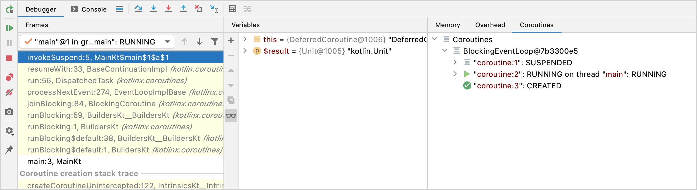

本教程演示如何创建 Kotlin 协程，并用 IntelliJ IDEA 调试它们。
教程假定读者已经了解协程的基本概念。
创建协程
在 IntelliJ IDEA 中打开 Kotlin 项目。如果还没有项目，先创建一个。
-
在 Gradle 项目中使用
kotlinx.coroutines，请在build.gradle(.kts)添加下列依赖。Kotlin
dependencies { implementation("org.jetbrains.kotlinx:kotlinx-coroutines-core:1.11.0") }Groovy
dependencies { implementation 'org.jetbrains.kotlinx:kotlinx-coroutines-core:1.11.0' }其他构建系统的说明见 kotlinx.coroutines README。
-
打开
src/main/kotlin目录中的Main.kt。src目录包含 Kotlin 源文件和资源。Main.kt中的示例代码会打印Hello World!。 -
修改
main()函数中的代码。用 runBlocking() 块包住协程代码。
用 async() 创建两个协程，分别计算由 Deferred 表示的
a和b。用 await() 等待计算结果。
用 println() 输出计算状态和乘积。
import kotlinx.coroutines.* fun main() = runBlocking<Unit> { val a = async { println("I'm computing part of the answer") 6 } val b = async { println("I'm computing another part of the answer") 7 } println("The answer is ${a.await() * b.await()}") } -
点击 Build Project 构建代码。

调试协程
-
在调用
println()的行上设置断点，如图所示。
-
点击窗口顶部运行配置旁的 Debug，以调试模式运行代码。

Debug 工具窗口会出现。
Frames 标签页显示调用栈。
Variables 标签页显示当前上下文中的变量。
Coroutines 标签页显示正在运行或挂起的协程。图中有三个协程，第一个状态为 RUNNING，另外两个为 CREATED。

-
在 Debug 工具窗口点击 Resume Program 继续执行。

此时 Coroutines 标签页显示下列状态。
第一个协程为 SUSPENDED，正在等待两个值，以便将它们相乘。
第二个协程正在计算
a的值，状态为 RUNNING。第三个协程为 CREATED，还未开始计算
b。
-
在 Debug 工具窗口中再次点击 Resume Program，继续执行。

现在 Coroutines 标签页显示下列状态。
第一个协程仍为 SUSPENDED，正在等待相乘所需的值。
第二个协程已算出结果，从列表中消失。
第三个协程正在计算
b，状态为 RUNNING。
可以在 IntelliJ IDEA 调试器中深入查看每个协程以调试代码。
被优化掉的变量
使用挂起函数时，调试器有时会在变量名旁显示 was optimized out。

这意味着变量的存活期被缩短，此时变量已经不存在。由于看不到变量值，调试会变得困难。可以用编译器选项 -Xdebug 关闭这种优化。